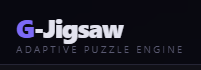

Gusty Faqikh
Mahasiswa Teknik Informatika dengan fokus pada pengembangan sistem efisien, desain antarmuka modern, dan arsitektur lintas platform. Saya merangkai logika menjadi kode yang fungsional dan estetis.
Mahasiswa Teknik Informatika dengan fokus pada pengembangan sistem efisien, desain antarmuka modern, dan arsitektur lintas platform. Saya merangkai logika menjadi kode yang fungsional dan estetis.
| Institusi | Program Studi | Semester | IPK Terakhir |
|---|---|---|---|
| Politeknik Negeri Pontianak | D3 Teknik Informatika | 4 | 3.79 |
| Fokus Studi: Pemrograman Web, Jaringan, dan Pengembangan GUI | |||

Bukan sekadar teka-teki biasa, proyek ini adalah eksperimen nyata dalam mengendalikan koordinat spasial di peramban. Di sini saya menantang diri untuk membangun sistem drag-and-drop yang halus serta kalkulasi algoritma presisi agar setiap kepingan gambar bisa mengunci otomatis pada posisi yang tepat.
Lihat Proyek →
Eksperimen seru bertema retro-neon untuk menguji batas performa rendering JavaScript. Proyek game endless runner ini memaksa saya mengulik logika mekanik fisika dasar, sistem deteksi tabrakan boks yang akurat, serta optimasi siklus animasi agar visualnya tetap berjalan mulus tanpa lag di berbagai perangkat.
Lihat Proyek →
Menghidupkan kembali game legendaris dengan pendekatan modern. Di proyek ini, saya merombak total struktur game klasik menggunakan HTML5 Canvas, mengoptimalkan pengelolaan array untuk pergerakan ular, serta menerapkan integrasi server Express minimalis agar aplikasi siap dideploy secara otomatis ke infrastruktur Vercel.
Lihat Proyek →
Wadah eksplorasi di mana teknologi bertemu dengan seni visual. Proyek portal fans ini saya rancang sebagai bentuk studi kasus dalam menyusun sistem desain yang responsif, menyelaraskan elemen multimedia, serta menyajikan layout web estetik dan interaktif yang terinspirasi langsung dari identitas band Barasuara.
Lihat Proyek →